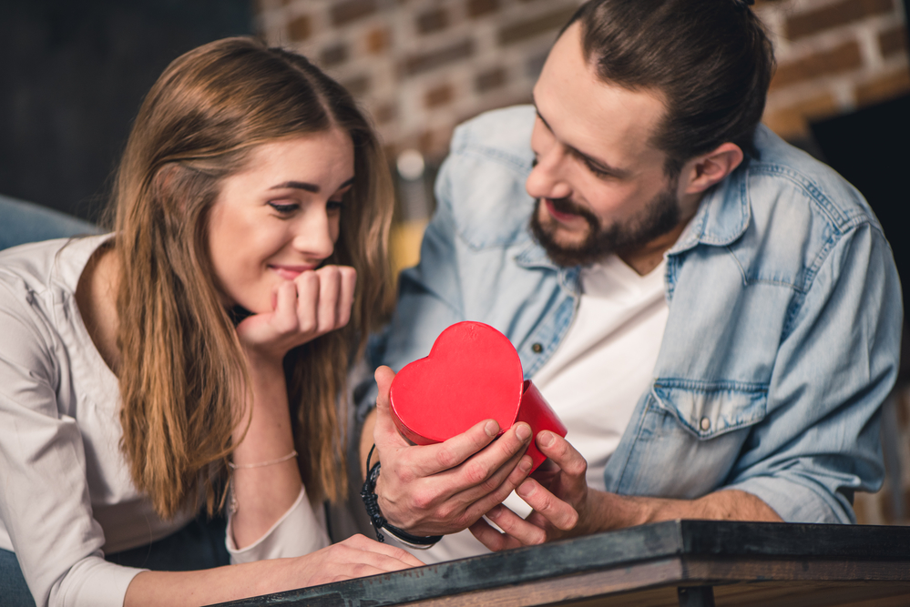
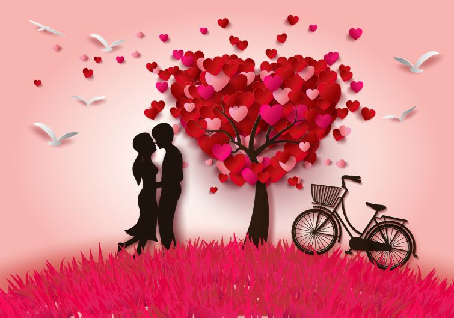

Подарунки
Люблять через подарунки та сюрпризи найчастіше візуали, тобто ті, хто сприймає світ найбільше через зображення. Ви легко розпізнаєте їх в натовпі: вони – естети, вміють гармонійно підбирати одяг та аксесуари.
Такі люди в розмові багато уваги приділяють зовнішньому опису людей та явищ. Знають чи не усі відтінки кольорів та можуть їх назвати. Їх рухи витончені та зграбні.
Слова
Часто та без особливих труднощів говорити про те, що любить, – це про аудіалів. Їм важливо сприймати реальність через звук. Шум та музика, вуличні обривки розмов, цитати з фільмів – все це міцно закарбовується в пам`яті аудіалів.
Саме тому людям з цією мовою любові винятково легко пояснювати, що вони відчувають.
А голос коханої людини для аудіалів має особливе значення. Вони надають перевагу тим, чий голос здається милозвучним та приємним для слухання.
Обійми та доторки
Ця мова любові означає, що людина намагається торкатися тих, кого любить, обіймати, пробує жартівливо щипати: під час приготування їжі, в супермаркеті, в метро.
Ці рухи не завжди мають сексуальний підтекст. Часто, це "я тебе люблю, тому хочу фізично відчувати, що ти дійсно поруч".
Обійми та доторки як мова любові притаманні кінестетам – людям, які пізнають світ через доторки.
Вони перед покупкою торкаються чи не всіх сорочок в магазині, щоб обрати ту, яка приємна на дотик. Їм важливі фактури, поверхні та все, чого можна сягнути (торкнутися). Це дає необхідну інформацію, яка допомагає почуватися комфортно.
Вчинки служіння
Вчинки є універсальною мовою любові, бо властива аудіалам, візуалам та кінестетам.
Найбільше через вчинки любов виражають небагатослівні люди, яким складно, зокрема, зізнаватися в тому, що вони переживають.
Людям з цією мовою любов здається чимось дуже конкретним – її вимірюють діями в тих чи інших ситуаціях.
Час, проведений разом
Любити цією мовою – це зосередитися на іншій людині під час спільної вечері, походів за продуктами, навіть – коли у вас проблема, яку вже треба вирішити. Без оновлення стрічки новин Facebook та обмірковування, що скаже керівниця завтра на зборах.
Йдеться про те, щоб не перебувати думками деінде, а бути тут і тепер.